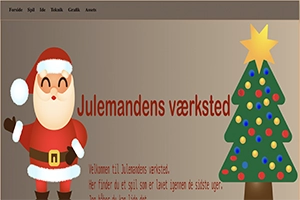

Animation
Julemandens værksted
I temaet animation var målet at udarbejde et spil ved brug af Javascript samt HTML og CSS. Her udarbejdede vi en ide, gennem skitsering af UI-elementer samt spil elementer. Her brugte vi Adobe illustrator til at få vores ideer bragt til live. Det svære ved dette emne, var forståelsen for Javascript som desværre ikke har sat sig fast. Dagen hvorpå spillet skulle afleveres var der problemer med mine svg filer samt javascript som desværre gjorde at spillet ikke blev som ønsket. Jeg har derfor under dette projekt arbejdet yderligere på at få forståelsen for javascript samt Adobe illustrator.


